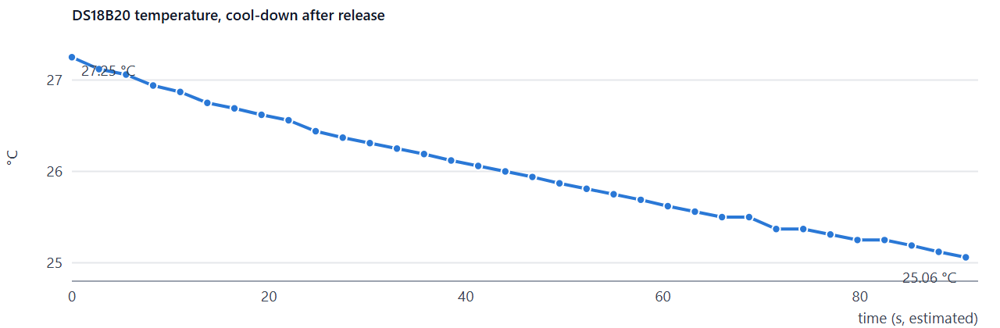
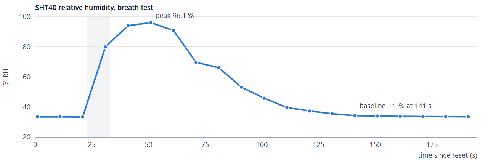
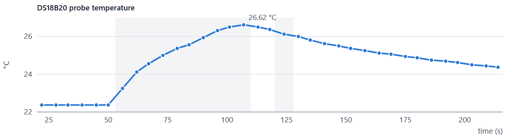
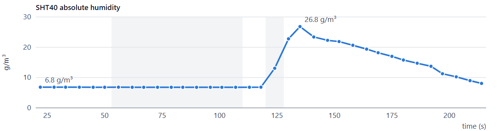
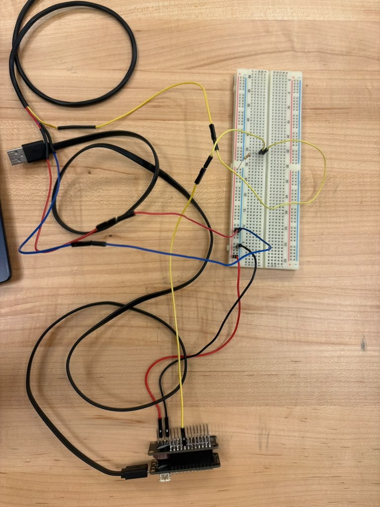

S.C.O.U.T. Electrical Subsystem · Test Report
| Report number | SCOUT-E-TR-001, Rev C | Status | Draft for review |
| Test date | 2026-10-29, 12:15–13:30 | Location | Room 4020, ECEN Soldering Lab |
| Tested by | Isabella Rodriguez | Reviewed by | Dr. Shoba Krishnan; Dr. Jes Kuczenski |
| Test plan | Bench Test Plan 2026-10-24, Tests 1, 3, 3b, 4, 11 | Tracking | SCO-152, SCO-60, SCO-204 |
| Overall result | PASS · 5 of 5 tests passed · 1 incident found and closed (AR-01) | ||
First powered verification of the buoy controller stack and its first two sensors: confirm the soldered hardware works, each device communicates on its intended interface, and the sensors respond correctly to physical stimuli before radio, storage and power testing.
Not tested this session: LoRa radio (no antenna fitted yet), microSD and coin-cell clock backup (parts pending), rail voltage and current draw (no multimeter), turbidity sensor (parts in transit), absolute accuracy against a calibrated reference.
| Hardware under test | Feather M0 RFM95 (3178) with Adalogger FeatherWing (2922) stacked on hand-soldered headers; DS18B20 waterproof probe (381) on D12 with 4.7 kΩ pull-up; SHT40 (4885) on I²C via STEMMA QT cable (4209). Powered from laptop USB, 3.3 V from the Feather regulator. |
| Wiring | Per Electrical Block Diagram (2026-10-28) on a breadboard. Probe: red → 3V3, blue → GND, yellow → D12. SHT40: red 3V3, black GND, blue SDA, yellow SCL. No differences from the diagram. |
| Software | Arduino IDE 2.3.10; Adafruit SAMD 1.7.17; OneWire 2.3.8, DallasTemperature 4.0.6, Adafruit SHT4x 1.0.5, RTClib 2.1.4. Bench test sketches scout_t1_hello, t3_ds18b20, t3_diag, t11_sht40, t3b_temp_leak, t4_rtc (not the flight firmware; same pin assignments). |
| Test equipment | Laptop (power, upload, logging). No multimeter or calibrated reference available. |
| Environment | Indoor lab, still air, ≈ 22.5 °C and ≈ 33.5 % RH (from the sensors under test). |
| ID | Test | Requirement | Pass criterion | Measured | Result |
|---|---|---|---|---|---|
| TC-01 | Controller bring-up | Enabling | Uploads; serial output at 1 Hz; banner after reset | 11,020 B sketch uploaded; 1 Hz output; banner after reset | PASS |
| TC-02 | Water-temperature probe (DS18B20) | N1, M1, M2 | 1 device found; room ±1 °C; tracks warming and cooling; no dropouts | 22 °C room; rise to 27.25 °C, smooth decay; 0.0625 °C steps; 0 dropouts after fix | PASS |
| TC-03 | Leak sensor (SHT40) | N10, N12, M19 | Within 0.7 °C of probe; RH steady ±1 %; clear step; recovers to ±1 % | ΔT 0.39 °C; 33.6 % RH steady; 33 → 96 % on breath; recovered in 90 s | PASS |
| TC-04 | Both sensors together | N1, N12 | Both report every cycle; each stimulus moves only its own sensor | 35 cycles, no errors; probe +4.3 °C with SHT40 unchanged; SHT40 AH ×3.9 with probe unaffected | PASS |
| TC-05 | Real-time clock (PCF8523) | N8, M13 | Found on I²C; counts 1 s; keeps time through reset | Set to 13:23:18, counted at 1 Hz; continued after reset | PASS* |
PASS: all criteria met. PARTIAL: shown under easier conditions than the requirement. FAIL: a criterion not met. * On USB power; coin-cell backup and drift not yet tested. Requirement IDs are the needs (N) and metrics (M) in the Project Specifications.
Procedure. Selected "Adafruit Feather M0 (SAMD21)", uploaded scout_t1_hello, opened the Serial Monitor, pressed reset once.
Observations. Compiled to 11,020 B (4 % of flash); counter printed at 1 Hz; start-up banner printed after reset; on-board LED blinked. The USB port moved from COM3 to COM5 after the first upload, which is normal for this board.
Procedure. Wired with power off; touch-checked the tip for heating after power-up; ran scout_t3_ds18b20 (12-bit, one reading every ≈ 2.75 s); warmed the tip by hand, released, and logged the cool-down.
Observations. First run reported no probe (AR-01, §5). After the fix: one device found, 22 °C at room temperature, tip not warm. Warming raised the reading to at least 27.25 °C; it then fell smoothly to 25.06 °C over ≈ 91 s with no dropouts. Every reading lands on a 0.0625 °C step, confirming 12-bit resolution (M2). The still-air time constant is ≈ 150–170 s; it will be much shorter in water.

Figure 1. Probe cool-down after hand warming (time axis at 2.75 s per reading).
Procedure. Connected by STEMMA QT cable with power off; ran scout_t11_sht40 (heater off, one reading every 10 s); logged 1 minute at rest; reset, logged 3 baseline readings, breathed on the sensor for ≈ 10 s, then left it alone.
Observations. Found on the first attempt with the probe still connected. At rest: 22.82–22.86 °C and 33.55–33.58 % RH, 0.39 °C above the probe, within the two sensors' combined tolerance (±0.7 °C). Breath raised humidity from 33.4 % to 96.1 % within 30 s, and it recovered to within 1 % of baseline 90 s after the peak.

Figure 2. Relative humidity during the breath test (shaded: breath applied).
Procedure. Ran scout_t3b_temp_leak (both sensors plus absolute humidity, one line every ≈ 5.6 s); warmed the probe by hand, then breathed on the SHT40, then left both alone.
Observations. Warming the probe raised it from 22.37 to 26.62 °C while the SHT40 stayed at 22.7 °C and 33.7 %. Breathing on the SHT40 raised absolute humidity from 6.8 to 26.8 g/m³ while the probe kept cooling undisturbed. Absolute humidity recovered faster than relative humidity because the air was also cooling, which supports using absolute humidity for the leak alarm (SCO-204).


Figure 3. Concurrent test on one time axis: probe temperature (top), SHT40 absolute humidity (bottom). Shaded: probe warmed (left), breath on SHT40 (right).
Procedure. Ran scout_t4_rtc, watched the time count, pressed reset once.
Observations. Clock found on I²C alongside the SHT40, which also confirms the stacking-header joints. With no coin cell it started unset, as expected, and was set to 13:23:18; it counted at 1 Hz and kept time through the reset.
| ID | Type | Description and root cause | Action taken | Status |
|---|---|---|---|---|
| AR-01 | Incident | Probe not detected on first run ("NO PROBE −127"). A diagnostic sketch plus a wiggle check traced it to a loose jumper-to-jumper junction on the yellow data line. | Junction re-seated; no dropouts in the next 69 readings. Use a continuous or soldered wire in the final build. | Closed |
| D-01 | Limitation | No multimeter: 3.3 V rail and current draw not measured. | Measure when a meter is available (M15). | Open |
| D-02 | Limitation | No calibrated reference: accuracy judged by agreement between the two sensors only. | Ice-point and reference check (M1). | Open |
| D-03 | Deviation | Bench sketches used instead of the flight firmware; clock set to local time, not UTC. | Firmware integration test; UTC set with the clock tool. | Open |
| Role | Name | Signature | Date |
|---|---|---|---|
| Test engineer | Isabella Rodriguez | ||
| Reviewer | Dr. Shoba Krishnan | ||
| Reviewer | Dr. Jes Kuczenski |
This folder (hardware/test/evidence/rr-25-2026-10-29/, repo record RR-25): screenshots/ (upload, "NO PROBE" before the fix, wiring photo, SHT40 baseline and breath test, clock) and data/ (cool-down, SHT40 baseline, breath test and concurrent-test readings as CSV). The bench sketches are in hardware/test/bench-sketches/. The full-detail Rev B of this report is kept outside the repo.

Figure 4. Bench setup: stacked M0 and Adalogger, breadboard rails, probe splices and SHT40.